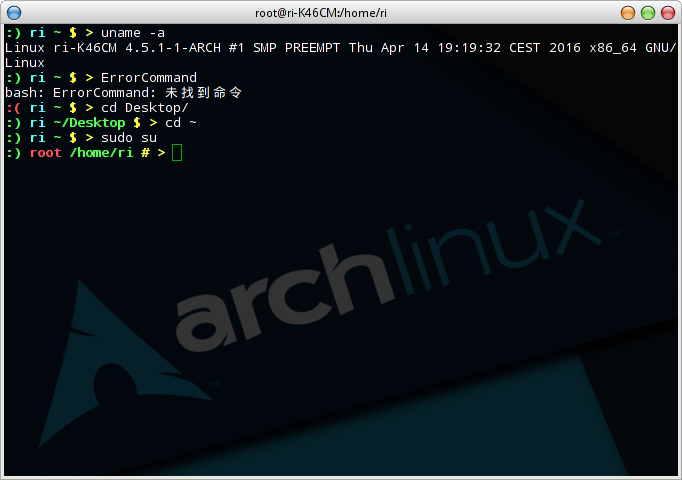
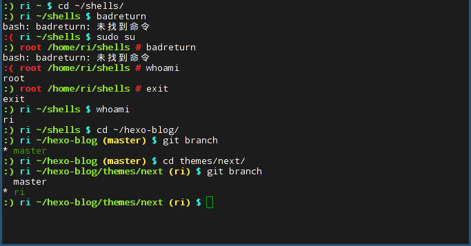
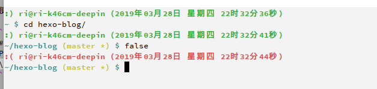

新增第三种，推荐使用
第一种
可以提示上一条命令是否出错，如果出错，最左边绿色的笑脸就会变成红色的哭脸，可以显示当前所在路径，当切换到root用户时用户名变为红色，如图所示:

使用方法，将下面的代码，复制粘贴到~/.bashrc中:
1 | # bash prompt by listenerri |
第二种
与第一种不同的是去掉了最右边的箭头，并且’$’和’#’号会随着用户名的颜色变化(root时为红色)
- 新增提示git仓库分支名称:
- 如果当前目录是git仓库的根目录，则以黄色的文字显示当前仓库的分支，否则不显示
如图所示:

使用方法，将下面的代码，复制粘贴到~/.bashrc中:
1 | # bash prompt by listenerri |
arch wiki自定义教程链接：
https://wiki.archlinux.org/index.php/Color_Bash_Prompt
第三种
时隔两年再次有了新需求，第二种 git 提示获取的方法会导致卡顿，另外还想在提示符上显示时间，但是这样一来就会导致提示符过长，因此有了下面这种换行的：

使用方法，首先在终端中执行以下命令：
1 | type __git_ps1 |
如果没有任何输出，或者输出内容不是一个 shell 函数，那么需要下载这个脚本：https://raw.githubusercontent.com/listenerri/dotfiles/master/git-prompt.sh，例如将其放在 HOME 目录下：~/git-prompt.sh，然后在 ~/.bashrc 中添加以下内容执行此脚本：
1 | source ~/git-prompt.sh |
__git_ps1 是一个 git 新版提供的函数，旧版本的 git 没有，因此需要下载并加载上面这个脚本，这个脚本是我从系统中提取出来的，未做任何修改。
接着将下面的代码，复制粘贴到 ~/.bashrc 中，并且要在上面那行之后，如果你不需要执行第二部下载那个脚本，则下面的内容放在哪里都行：
1 | export GIT_PS1_SHOWDIRTYSTATE=1 |
另外需要启用 bash-completion 即 bash 的补全功能，这个一般都会启用的。
推荐下我的 dotfiles 项目：https://github.com/listenerri/dotfiles，里面或许有能让你有其他灵感的内容。